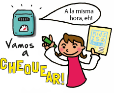
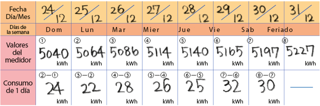
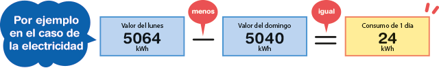
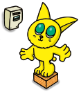
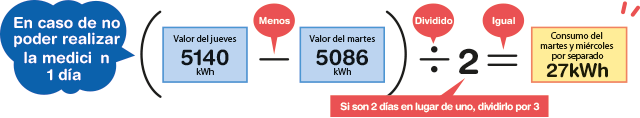
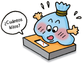
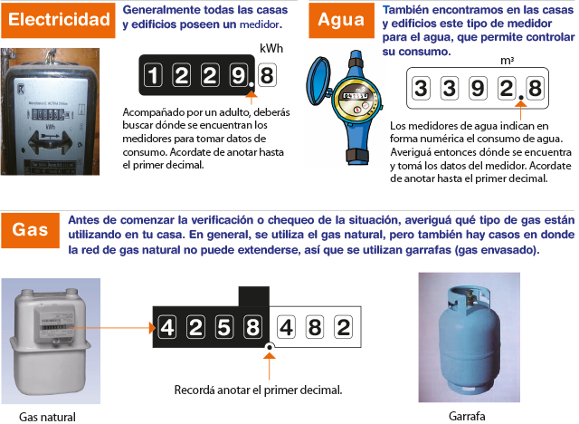

Veamos la situación en números
Antes de la estrategia
A partir de ahora, vas a ser protagonista del proceso de cuidado del ambiente. Para comenzar es necesario que todos los días durante una semana, observes con atención los hábitos de tu hogar con respecto al consumo de electricidad, gas, agua y a la cantidad de residuos que se generan.
Tené en cuenta estos datos y valores numéricos antes de comenzar con tu estrategia.
Forma de leer y de calcular los valores numéricos
Todos los días, fijá una hora para hacer la mediciónHaciéndolo a la misma hora, podremos saber exactamente el consumo de un día. Leé los números del medidor y anotalosTomando como referencia el dibujo de la página 7, ubicá el lugar donde está el medidor y chequeá los números que aparecen allí. |
 |
Ejemplo de cómo hacer la anotación

Para calcular el consumo de un día
Tomá los valores de ese día y del día anterior y la diferencia entre ambos nos da el consumo de agua o electricidad de un día.

Caso especial de un día en que no se pueda chequear el medidorSi por alguna razón, hay un día que no podés realizar el chequeo, debés sacar el promedio del día anterior y del día posterior, y luego tenés que anotar ese valor. |
 |

Cuando verificamos la cantidad de residuoPara chequear la cantidad de residuos que se producen en tu casa, podés contar la cantidad de bolsas por día y anotarlo. En caso de que tengas una balanza, podés realizar la medición registrando el peso de las bolsas de residuos. |
 |
Lugar donde está el medidor
